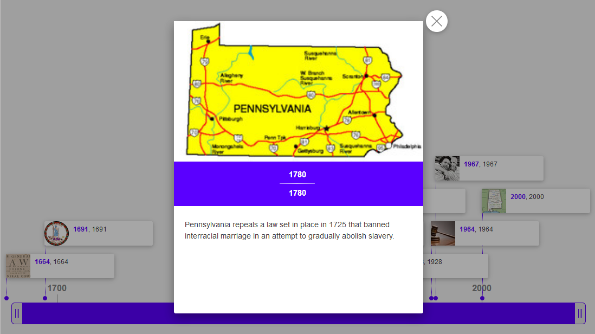
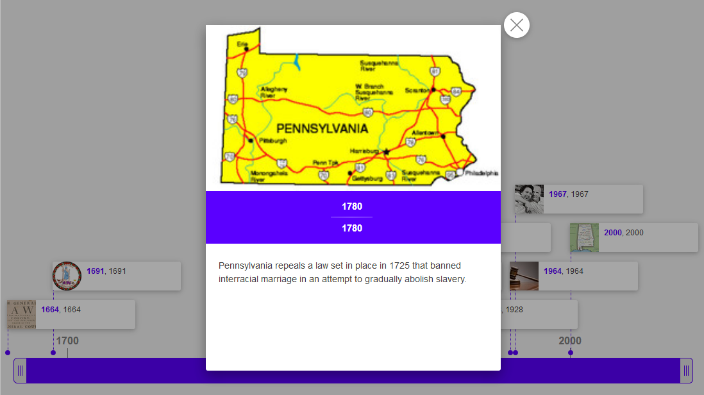

LOVE
1682
Philadelphia
Philia: Love, Friendship or Affection
Adelphos: Brotherly or Sisterly
 

1965
10-11-2018
10-7-2018
Philadelphia
Getting along with fellow Philadelphians
INDEPENCENCE
#TeamGritty


LezWatch.TV
The Greatest Database of Queer Female, Non-Binary, & Transgender TV
We
The Queerest Things I Watched Last Week
One year of blogging weekly
ENIAC
The first computer

#MoreColorMorePride
Intersectionality
Taking into account people’s overlapping identities and experiences to understand the complexity of issues they face.
Take the
LOVE / INDEPENCENCE / FIRSTS
Challenge
Operate from a place of
fear FUN!
Get out of your bubble
Make your next 20 Twitter followers people not like you.
Like and listen
Stop saying "he" when talking about a imaginary person.
Be the minority in the room
Go to a networking event where everyone isn't like you.
Meet diverse technologists
TA a Girl Develop It class.
Check your default pronouns
Stop saying "he" when talking about a imaginary person.
Reflect reality
Use diverse photos in your presentations.
Apologize
We all mess up, the next time you do, say you're sorry.
Consciously Unbias
We all have unconscious bias, work to challenge it.